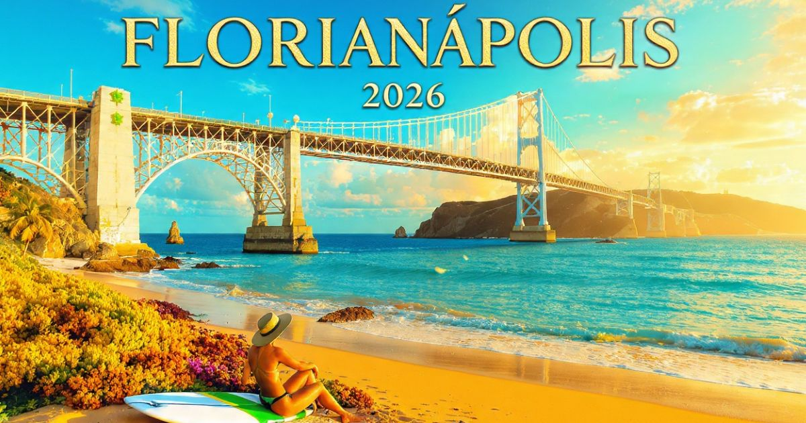

Florianópolis 2026: guia completo para viajar para a Ilha da Magia
Introdução: a ilha mais encantadora do Brasil
Florianópolis, carinhosamente chamada de "Ilha da Magia", é um dos destinos mais encantadores e procurados do Brasil. Capital do estado de Santa Catarina, a cidade combina belezas naturais deslumbrantes, mais de 40 praias de tirar o fôlego, uma cultura açoriana rica, uma gastronomia deliciosa e uma qualidade de vida invejável. Seja para relaxar na Praia da Joaquina, se aventurar nas dunas da Lagoa da Conceição, curtir a vida noturna da Jurerê Internacional ou simplesmente apreciar o pôr do sol na Ponte Hercílio Luz, Florianópolis oferece experiências inesquecíveis para todos os perfis de viajantes.
Em 2026, Florianópolis continua sendo um dos destinos preferidos dos viajantes brasileiros e estrangeiros. A cidade se prepara para receber turistas do mundo inteiro com uma infraestrutura cada vez mais moderna, mantendo seu charme natural e sua essência única. Com sua combinação de praias, natureza, cultura e gastronomia, a Ilha da Magia é o destino perfeito para quem busca lazer, aventura e tranquilidade.
Neste guia completo sobre Florianópolis, você vai encontrar tudo o que precisa saber para planejar sua viagem: a melhor época para visitar, as praias imperdíveis, as atrações da ilha, os melhores bairros para se hospedar, como se locomover pela cidade, dicas de gastronomia, compras e muito mais.
Nosso objetivo é que você chegue a Florianópolis preparado para aproveitar ao máximo cada minuto nessa ilha encantadora. Afinal, a Ilha da Magia é mais do que um destino — é uma experiência que combina natureza, cultura, gastronomia e a calorosa hospitalidade catarinense em um só lugar.

A icônica Ponte Hercílio Luz, símbolo de Florianópolis
Melhor época para visitar Florianópolis
Florianópolis tem quatro estações bem definidas, cada uma com sua beleza única. A escolha da melhor época depende do que você busca na viagem.
Verão (dezembro a março) — Época mais quente do ano, com temperaturas que podem ultrapassar 30°C. A cidade fica cheia de turistas, os preços são mais altos e as praias ficam lotadas. No entanto, o verão oferece a oportunidade de aproveitar as praias, as trilhas e a vida noturna. É a época mais animada da ilha, mas também a mais cara. O Carnaval também é uma atração à parte.
Outono (abril a maio) — Uma das melhores épocas para visitar Florianópolis. As temperaturas são agradáveis (entre 15°C e 25°C), o céu fica mais azul e a cidade oferece uma atmosfera relaxada. Os preços dos hotéis são mais acessíveis que no verão. É a época ideal para quem quer explorar a ilha sem multidões, e as cores do outono deixam a paisagem ainda mais bonita.
Inverno (junho a setembro) — A estação mais fria do ano, com temperaturas entre 5°C e 18°C. Os dias são ensolarados e as noites são frias. É a melhor época para quem quer explorar a ilha sem o calor intenso do verão e fazer trilhas. Os preços dos hotéis são mais baixos e as praias ficam desertas. É a época da famosa Oktoberfest de Blumenau, que fica a poucas horas de Florianópolis.
Primavera (outubro a novembro) — As temperaturas começam a subir (entre 15°C e 25°C), os dias ficam mais longos e a natureza floresce. Os preços dos hotéis começam a subir com a chegada da alta temporada. É a época das flores e da natureza exuberante.
Dica: Se você quer evitar as multidões e os preços altos, o outono (abril/maio) e a primavera (outubro/novembro) são as melhores escolhas. Se quer praia e agito, o verão é a época certa, mas reserve com muita antecedência!
Melhores praias de Florianópolis
Florianópolis tem mais de 40 praias, cada uma com sua personalidade. Separamos as imperdíveis para você:
Praia da Joaquina — A praia mais famosa de Florianópolis, conhecida por suas ondas perfeitas para o surfe e suas dunas. A Joaquina é o paraíso dos surfistas e oferece uma paisagem deslumbrante. A praia tem uma atmosfera jovem e descontraída. Não deixe de subir as dunas para ter uma vista incrível.
Praia Mole — A praia da moda em Florianópolis, com sua atmosfera sofisticada e sua beleza natural. A Mole é o lugar para ver e ser visto, com uma vibe descolada e praiana. A praia é famosa pelos seus pores do sol e pela sua cena cultural.
Praia do Campeche — Uma das praias mais bonitas da ilha, com suas águas cristalinas e sua paisagem preservada. O Campeche é um refúgio de tranquilidade e natureza, com suas areias brancas e o mar azul.
Jurerê Internacional — A praia mais sofisticada de Florianópolis, com sua atmosfera luxuosa, seus restaurantes refinados e sua vida noturna animada. Jurerê é o lugar para quem busca glamour e exclusividade.
Lagoa da Conceição — Embora não seja uma praia, a Lagoa é um dos destinos mais famosos de Florianópolis. A lagoa oferece atividades como kitesurf, stand-up paddle, passeios de barco e uma vida noturna animada. A vista do alto do morro é espetacular.
Praia do Santinho — Uma praia mais tranquila, com suas piscinas naturais e sua atmosfera familiar. O Santinho é o lugar perfeito para relaxar e curtir a natureza.
Praia da Galheta — A praia naturista de Florianópolis, com sua atmosfera alternativa e sua beleza natural. A praia é de difícil acesso, mas vale a pena pela paisagem.
O que fazer em Florianópolis: atrações imperdíveis
Além das praias, Florianópolis oferece uma série de atrações imperdíveis:
Ponte Hercílio Luz — O símbolo máximo de Florianópolis. A ponte é uma das mais bonitas do Brasil e oferece uma vista deslumbrante da cidade. A visita à ponte é obrigatória, especialmente ao pôr do sol.
Centro Histórico — O centro de Florianópolis preserva a arquitetura açoriana, com casarões históricos, igrejas e museus. Explore o Mercado Público, a Catedral Metropolitana e o Museu Histórico de Santa Catarina.
Mirante da Lagoa — O mirante que oferece a melhor vista da Lagoa da Conceição. A vista do alto é espetacular, com a lagoa, as montanhas e o mar ao fundo. Imperdível ao pôr do sol.
Parque Estadual do Rio Vermelho — Uma área de preservação ambiental com trilhas, lagoas e praias. O parque é o lugar perfeito para os amantes da natureza. Não perca a Lagoa do Peri.
Trilhas da Ilha — Florianópolis tem diversas trilhas para todos os níveis. A trilha da Costa da Lagoa e a trilha do Morro das Aranhas são as mais famosas.
Fortalezas da Ilha — As fortalezas históricas de Florianópolis, como a Fortaleza de São José da Ponta Grossa e a Fortaleza de Santo Antônio de Ratones.
Onde ficar em Florianópolis: melhores bairros
Escolher onde se hospedar é uma das decisões mais importantes. Cada bairro da ilha tem sua personalidade:
Centro e Beira-Mar Norte — O coração da cidade, com hotéis, restaurantes e fácil acesso a todas as regiões. Ficar no Centro significa estar perto das principais atrações. Os preços são variados.
Lagoa da Conceição — O bairro boêmio de Florianópolis, com bares, restaurantes, lojas e uma atmosfera vibrante. Ficar na Lagoa significa estar perto da vida noturna e das atividades na lagoa. Os preços são variados.
Jurerê Internacional — O bairro mais sofisticado da ilha, com hotéis de luxo, restaurantes refinados e uma atmosfera exclusiva. Os preços são elevados.
Praia do Campeche — O bairro tranquilo e familiar, com praias bonitas e uma atmosfera relaxada. Os preços são moderados.
Rio Tavares — O bairro tradicional, com suas casas açorianas e sua atmosfera autêntica. Os preços são mais acessíveis.
Dica: Para quem quer agito e vida noturna, a Lagoa da Conceição é a melhor opção. Para quem busca sofisticação, Jurerê é o lugar certo. Para economia, Rio Tavares e Campeche são ótimas escolhas.
Como chegar a Florianópolis
Chegar a Florianópolis é fácil, com voos diretos do Brasil e conexões eficientes.
Avião — Aeroporto:
- Aeroporto Internacional de Florianópolis (FLN) — O principal aeroporto da região. Recebe voos nacionais e internacionais. Fica a cerca de 10 km do centro e tem conexões de ônibus e transfer.
Como ir do aeroporto ao centro:
- Ônibus: Para o centro (R$ 5-10, 30-40 min).
- Táxi/Uber: R$ 40-70.
Visto e documentação: Para brasileiros, apenas RG ou CNH são necessários (viagem doméstica). Para estrangeiros, é necessário passaporte válido e, dependendo da nacionalidade, visto.
Transporte em Florianópolis: como se locomover
Florianópolis é uma ilha, e o carro é a melhor forma de se locomover para explorar as praias.
Carro alugado:
- A melhor opção para explorar a ilha com liberdade.
- Tarifa: R$ 80-150 por dia.
Ônibus:
- Ampla rede de ônibus cobre toda a ilha.
- Tarifa: R$ 4,80 por viagem.
Táxis e aplicativos:
- Tarifa inicial: R$ 5,50 + R$ 2,50 por km.
- Uber e 99 disponíveis.
Dica: Alugar um carro é a melhor opção para quem quer explorar as praias da ilha com liberdade. O transporte público é eficiente, mas o carro oferece mais flexibilidade.
Gastronomia em Florianópolis: o que comer
Florianópolis tem uma gastronomia deliciosa, com influências açorianas, portuguesas e italianas. Confira o que não perder:
Ostra — Florianópolis é a capital nacional das ostras. As ostras são cultivadas na região e são uma delícia. Experimente na Lagoa da Conceição ou no Campeche.
Peixe e frutos do mar — A culinária de Florianópolis é rica em peixes e frutos do mar. Experimente o peixe fresco, a tainha, o camarão, a lagosta e o ouriço.
Sequência de camarão — Uma refeição típica da região, com camarão empanado, alho e óleo, à milanesa, etc.
Pão de queijo e café colonial — A tradição açoriana do café colonial é uma experiência imperdível, com pães, bolos, queijos, doces e salames.
Mercados gastronômicos:
- Mercado Público de Florianópolis: O mercado tradicional da cidade, com restaurantes, peixarias, frutas e produtos regionais.
- Feiras e quiosques: Nas praias, há quiosques com comidas típicas e frutos do mar frescos.
Compras em Florianópolis: o que levar para casa
Florianópolis tem opções de compras para todos os gostos.
Mercado Público: Produtos regionais, artesanato, rendas, doces e salames.
Centro Histórico: Lojas de artesanato, roupas e acessórios.
Feiras de artesanato: A Feira de Artesanato da Lagoa e a Feira de Santo Antônio de Lisboa são ótimas opções.
Souvenirs:
- Miniaturas da Ponte Hercílio Luz
- Chaveiros e imãs com símbolos da ilha
- Rendas e bordados açorianos
- Produtos gastronômicos (ostras enlatadas, doces, salames)
- Camisetas com estampas da ilha
Dicas de economia em Florianópolis
- Alugue um carro — O carro é a melhor forma de explorar a ilha com liberdade e economia.
- Visite praias menos conhecidas — As praias mais afastadas são mais baratas e menos lotadas.
- Alimente-se em quiosques e mercados — Em vez de restaurantes caros, experimente os quiosques de praia e os mercados.
- Aproveite a natureza gratuita — As trilhas e mirantes são gratuitos e oferecem experiências incríveis.
Florianópolis é uma ilha que combina praias, natureza, cultura e gastronomia de forma única! Alugue um carro para explorar a ilha com liberdade, não deixe de experimentar as ostras da Lagoa da Conceição e curta os pores do sol nas praias da Joaquina e Mole. E o mais importante: explore além das praias — a Ilha da Magia tem muito mais a oferecer!
❓ Perguntas Frequentes sobre Florianópolis
Recomenda-se pelo menos 7 a 10 dias para explorar Florianópolis com calma. Com 7 dias, você consegue visitar as principais praias e atrações. Com 10 dias, pode explorar a ilha com mais profundidade.
O outono (abril/maio) e a primavera (outubro/novembro) são as melhores épocas, com clima agradável e menos multidões. O verão é quente e lotado. O inverno é frio, mas as praias ficam desertas.
Sim. Florianópolis é uma cidade segura para turistas. Como em qualquer grande cidade, tome cuidados básicos com objetos de valor.
Uma viagem de 7 dias para Florianópolis custa entre R$ 3.000 e R$ 9.000 (incluindo passagens, hospedagem, alimentação e atrações).
Dia 1: Praias do Leste (Joaquina, Mole), Lagoa da Conceição; Dia 2: Ponte Hercílio Luz, Centro Histórico, Mercado Público; Dia 3: Praias do Sul (Campeche, Santinho) ou Fortalezas da Ilha.
A Joaquina é a mais famosa (surfe). A Mole é a mais sofisticada. O Campeche é a mais bonita. Jurerê é a mais luxuosa. Tudo depende do seu gosto!
Sim, é altamente recomendado. O carro é a melhor forma de explorar as praias da ilha com liberdade e economia.
No verão: roupas leves, biquíni/maiô, protetor solar, chapéu, chinelos. No inverno: roupas quentes, casaco, cachecol e luvas. Calçados confortáveis para caminhar.